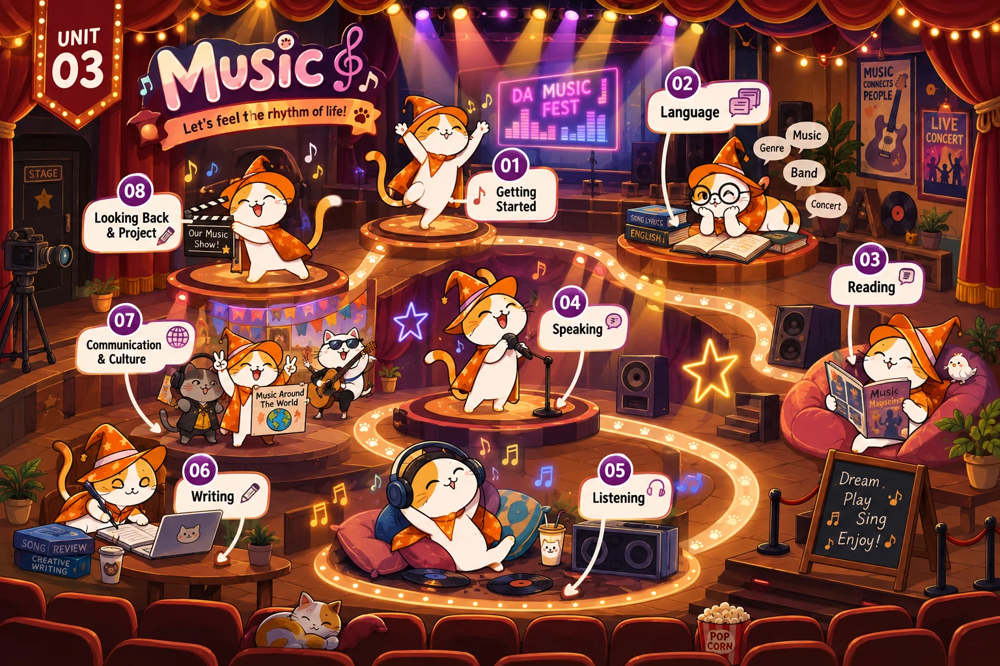

Lesson 1 · Getting started — A talented artist Lesson 2 · Language Lesson 3 · Reading: A famous TV music show Lesson 4 · Speaking: A music show Lesson 5 · Listening: An international youth music festival Lesson 6 · Writing: A blog about an experience at a music event Lesson 7 · Communication and Culture / CLIL Lesson 8 · Looking back and ProjectĐã dựng: Lesson 1, 2, 3, 4, 5, 6, 7, 8. Đủ cả 8 tiết. ♫ Game khởi động Guess the Song · 🎁 Game Music Mystery Box (Reading).